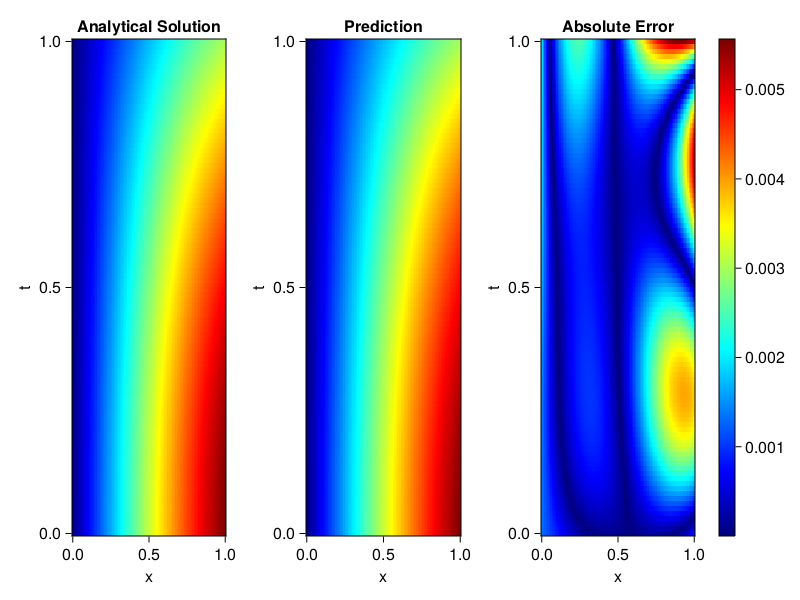
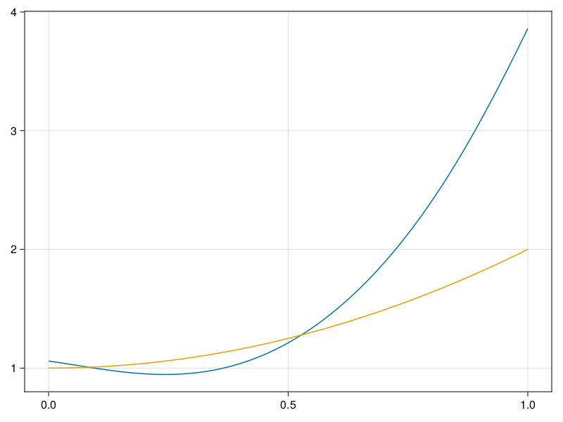

Inverse problem for the wave equation with unknown velocity field
We are going to sovle the wave equation.
using Sophon, ModelingToolkit, IntervalSets
using Optimization, OptimizationOptimJL
@parameters x, t
@variables u(..), c(..)
Dₜ = Differential(t)
Dₜ² = Differential(t)^2
Dₓ² = Differential(x)^2
s(x,t) = abs2(x) * sin(x) * cos(t)
eq = Dₜ²(u(x,t)) ~ c(x) * Dₓ²(u(x,t)) + s(x,t)
bcs = [u(x, 0) ~ sin(x),
Dₜ(u(x, 0)) ~ 0,
u(0, t) ~ 0,
u(1, t) ~ sin(1) * cos(t)]
domains = [t ∈ Interval(0.0, 1.0),
x ∈ Interval(0.0, 1.0)]
@named wave = PDESystem(eq, bcs, domains, [t,x], [u(x,t),c(x)])\[ \begin{align} \frac{\mathrm{d}}{\mathrm{d}t} \frac{\mathrm{d}}{\mathrm{d}t} u\left( x, t \right) =& c\left( x \right) \frac{\mathrm{d}}{\mathrm{d}x} \frac{\mathrm{d}}{\mathrm{d}x} u\left( x, t \right) + \cos\left( t \right) \left|x\right|^{2} \sin\left( x \right) \end{align} \]
Here the velocity field $c(x)$ is unknown, we will approximate it with a neural network.
pinn = PINN(u = FullyConnected((2,16,16,16,1), sin),
c = FullyConnected((1,16,16,1), tanh))
sampler = QuasiRandomSampler(500,100)
strategy = NonAdaptiveTraining(1, (10,10,1,1))NonAdaptiveTraining{Int64, NTuple{4, Int64}}(1, (10, 10, 1, 1))Next we generate some data of $u(x,t)$. Here we place two sensors at $x=0.1$ and $x=0.5$.
ū(x,t) = sin(x) * cos(t)
x_data = hcat(fill(0.1, 1, 50), fill(0.5, 1, 50))
t_data = repeat(range(0.0, 1.0, length = 50),2)'
input_data = [x_data; t_data]
u_data = ū.(x_data, t_data)1×100 Matrix{Float64}:
0.0998334 0.0998126 0.0997503 0.0996464 … 0.275281 0.267213 0.259035Finally we construct the inverse problem and solve it.
additional_loss(phi, θ) = sum(abs2, phi.u(input_data, θ.u) .- u_data)
prob = Sophon.discretize(wave, pinn, sampler, strategy; additional_loss=additional_loss)
@time res = Optimization.solve(prob, BFGS(), maxiters=1000)u: ComponentVector{Float64}(u = (layer_1 = (weight = [-0.2072135666761085 0.17788550521279797; -0.40484055158870874 1.5654024884051247; … ; -0.2348357386095636 1.446344805626575; 0.6450698155236257 0.5803914784149712], bias = [-0.3087235197828222; 0.3895098546342143; … ; -0.05522333076544861; -0.3114299063944907;;]), layer_2 = (weight = [-0.4320491662471577 -0.012531199178797057 … 0.25641214052813216 -0.14713518593494598; 0.5047730979218884 -0.07140668002367881 … -0.5390115606074193 0.14595213576344757; … ; 0.021758128061411176 -0.2892864345734551 … 0.4286008584077238 -0.41545838034212595; 0.44935061184730224 -0.3059064065409213 … 0.4638138320504026 -0.26772169963458786], bias = [0.05084894374815493; -0.05048991767767969; … ; 0.05147940808442386; 0.0927085719804964;;]), layer_3 = (weight = [-0.28097892198043195 -0.014638284519157446 … 0.016465919338144442 -0.07020155740911113; 0.2872368311188694 0.9812724126405378 … 0.5195575457741576 0.4271061674448293; … ; 0.013780009999129433 -0.5598274879205685 … 0.08038978965643974 0.22074032839004032; 0.9072391291651337 -0.45045765468928856 … -0.05982571691446589 -0.1840577822525586], bias = [-0.15588402160021822; 0.00819174409592453; … ; 0.14646459118438676; 0.0329841936529201;;]), layer_4 = (weight = [0.2031260569803061 -0.4326641346912316 … -0.7569163941116902 0.2539954054345779], bias = [-0.20260818037699535;;])), c = (layer_1 = (weight = [-2.017916150361153; -2.659583283384195; … ; 0.7813764923735514; -2.1901572071860747;;], bias = [-0.2805792902807326; -0.06122926188153069; … ; 0.02594137480890508; -0.3740690957306688;;]), layer_2 = (weight = [0.39096434366890653 0.5951949729795004 … 0.4707483419439557 0.5967112004406232; -0.538045134516354 -0.2797663359621827 … -0.019476648631935392 0.6993244336104197; … ; -0.011559480301497073 -0.11473417766467592 … 0.21169340487358687 -0.5918360432053501; 0.19902394151796732 0.17308704557850355 … 0.1672747583229135 -0.03208013743324878], bias = [0.12888405275023926; -0.3287664412871489; … ; 0.35396766309799194; 0.06866820989637984;;]), layer_3 = (weight = [0.6639464084399158 -1.0359113057606877 … 1.064496914909873 -0.15448378233345245], bias = [0.8231951642129333;;])))Let's visualize the predictted solution and inferred velocity
using CairoMakie
ts = range(0, 1; length=100)
xs = range(0, 1; length=100)
u_pred = [pinn.phi.u([x, t], res.u.u)[1] for x in xs, t in ts]
c_pred = [pinn.phi.c([x], res.u.c)[1] for x in xs]
u_true = [ū(x, t) for x in xs, t in ts]
c_true = 1 .+ abs2.(xs) |> vec
axis = (xlabel="x", ylabel="t", title="Analytical Solution")
fig, ax1, hm1 = heatmap(xs, ts, u_true, axis=axis; colormap=:jet)
ax2, hm2= heatmap(fig[1, end+1], xs, ts, u_pred, axis= merge(axis, (;title = "Prediction")); colormap=:jet)
ax3, hm3 = heatmap(fig[1, end+1], xs, ts, abs.(u_true .- u_pred), axis= merge(axis, (;title = "Absolute Error")); colormap=:jet)
Colorbar(fig[:, end+1], hm3)
fig
fig, ax = lines(xs, c_pred)
lines!(ax, xs, c_true)
fig